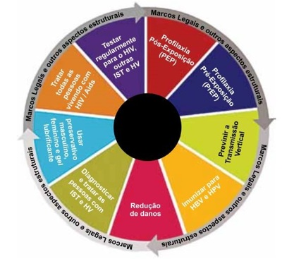
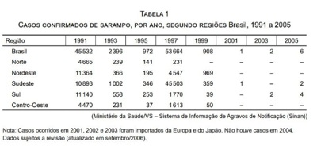
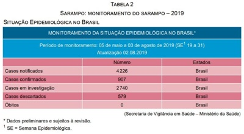
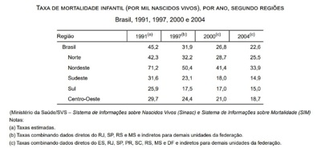
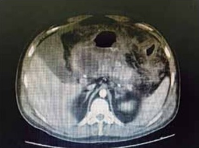
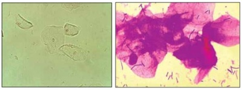
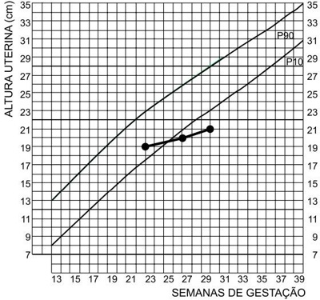
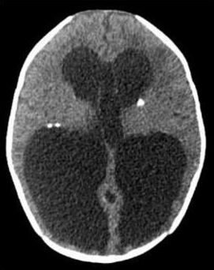

Questão 1 · Classif icação de risco · Inf ectologia · Quadro clínico · 4000120617Com relação à dengue, é correto afirmar que
A diferentemente de outras doenças, a gravidade não está relacionada a fatores de riscoindividuais.
B a imunidade adquirida é permanente apenas para o primeiro sorotipo após a infecção,não ocorrendo após a segunda.
C a maioria dos pacientes apresenta formas graves, hemorrágicas com choque e risco demorte.
D o período de viremia geralmente se inicia um dia antes do aparecimento da febre.
Questão 2 · HIVAids · 4000120609No cuidado das pessoas que vivem com HIV, a figura a seguir representa a mandala de

A intervenções comportamentais.
B estratégia de tratamento eficaz.
C prevenção combinada.
D estratégia de combinação de tratamento.
Questão 3 · Hanseníase tuberculoide · 4000120593Homem de 35 anos apresenta, há 3 anos, uma única lesão no terço inferior da perna esquerda caracterizada por placa com centro hipocrômico, anestésica e bordas moderada- mente elevadas (imagem a seguir). Baciloscopia: negativa; exame anatomopatológico: in ltrado inflamatório granulo-matoso perineural e perianexial, com pesquisa de BAAR negativa; reação de Mitsuda: positiva. É correto afirmar que

A não há evidências para diagnóstico de hanseníase, pois a baciloscopia foi negativa.
B se trata de hanseníase indeterminada, pois apresenta uma única lesão cutânea.
C o diagnóstico é de hanseníase tuberculoide, mesmo sem o achado do bacilo.
D o diagnóstico é de hanseníase dimorfa, pois a reação de Mitsuda foi positiva.
Questão 4 · Introdução · Sarampo · Vigilância Epidemiológica · 4000120580O fato que justifica a epidemia de sarampo que está ocorrendo no Brasil é
A a presença de indivíduos não vacinados suscetíveis pela baixa cobertura vacinal contra sarampo.
B a falta de vacinas, responsável pela baixa cobertura vacinal, com consequente aumentode casos.
C a baixa eficácia da vacina, responsável pelo aumento de indivíduos suscetíveis.
D o aumento da virulência do RNA vírus, responsável pelo aumento da transmissão dadoença.
Questão 5 · Esquema básico para tuberculose pulmonar · Inf ectologia · Diagnóstico · 4000120571Homem de 43 anos, em consulta na UBS, refere tosse, sudorese noturna, inapetência e emagrecimento há 2 meses. Radiogra a de tórax: in ltrado em ápice direito, baciloscopia direta: positiva para BAAR em duas amostras de escarro. De acordo com as orientações do Ministério da Saúde do Brasil, a conduta correta é
A aguardar resultado da cultura de escarro e teste de sensibilidade para introduzirtratamento e convocar contatos intradomiciliares para consulta e realização de prova tuberculínica.
B notificar o caso para a vigilância epidemiológica, encaminhar para o nível secundáriode assistência para introdução do tratamento e agendar consulta médica em 30 dias na UBS.
C realizar testagem para HIV, introduzir esquema de tratamento com esquema RIPE(rifampicina-isoniazida- pirazinamida-etambutol) e notificar o caso para a vigilância epidemiológica.
D agendar visita domiciliar, construir ecomapa, convocar contatos intradomiciliares esolicitar provas de função hepática para o paciente, aguardando os resultados para introduzir esquema RIPE (rifampicina-isoniazida- pirazinamida-etambutol).
Questão 6 · Declaração de óbito DO Atestado de óbito · 4000120560Homem de 66 anos estava consertando o telhado de sua própria residência quando veio a cair de uma altura de oito metros. Atendido pelo SAMU, foi levado ao hospital, sendo constatado traumatismo cranioencefálico, falecendo minutos após. A família informou que o paciente era portador de diabetes mellitus e hipertensão arterial. Com base nessas informações, é correto o seguinte preenchimento da Declaração de Óbito:
A PARTE I; a) Traumatismo cranioencefálico; b) Queda de telhado; c) _______________; d) _______________; PARTE II; Hipertensão arterial; Diabetes mellitus
B PARTE I; a) Traumatismo cranioencefálico; b) _______________; c) _______________; d) _______________; PARTE II; Queda de telhado
C PARTE I; a) Queda de telhado; b) Traumatismo cranioencefálico; c) _______________; d) _______________; PARTE II _______________
D Por se tratar de morte por causa não natural, não deverá ser emitido Atestado de Óbito, cabendo, ao Instituto Médico Legal, a emissão de laudo competente para esses casos.
Questão 7 · Sigilo prof issional · Documentos médicos · 4000120551Segundo o Código de Ética Médica, de 2019, é vedado ao médico
A deixar de atestar óbito de paciente ao qual vinha prestando assistência, mesmo quando houver indícios de morte violenta.
B atestar óbito quando não tenha prestado assistência ao paciente, salvo,exclusivamente, se o fizer em caso de necrópsia ou verificação médico-legal.
C atestar óbito quando não o tenha verificado pessoalmente.
D deixar de prestar informações a empresas seguradoras sobre as circunstâncias da morte do paciente sob seus cuidados.
Questão 8 · Política Nacional de Humanização · 4000120545Está incluída dentre as diretrizes da Política Nacional de Humanização:
A garantir a permanência hospitalar, evitando-se a desospitalização precoce e os riscosdos cuidados em domicílio.
B respeitar a autonomia dos profissionais médicos, evitando-se o uso de protocolosclínicos.
C garantir atendimento igualitário a toda demanda observando rigorosamente a ordemcronológica de chegada.
D prover o acesso à estrutura hospitalar e a transferência segura, conforme anecessidade dos usuários.
Questão 9 · Política Nacional de Promoção de Saúde · 4000120538“Ampliar a autonomia e a corresponsabilidade de sujeitos e coletividades, inclusive o poder público, no cuidado integral à saúde e minimizar e/ou extinguir as desigualdades de toda e qualquer ordem (étnica, racial, social, regional, de gênero, de orientação/opção sexual, entre outras)” é um dos objetivos específicos
A da Política de Humanização do SUS.
B da Política Nacional de Promoção da Saúde.
C dos Núcleos de Apoio à Saúde da Família (NASF).
D da Clínica Ampliada e Compartilhada.
Questão 10 · Planos e Seguros de Saúde Lei n 96561998 · 4000120530O setor de saúde suplementar exibe diferentes modalidades de gestão e operação. A modalidade denominada “medicina de grupo” tem como característica:
A a gestão do plano é feita por profissionais médicos vinculados às cooperativas,denominados cooperados.
B os serviços podem ser prestados por unidades próprias, onde os profissionais de saúde são empregados da empresa de medicina de grupo, ou por meio de unidades credenciadas por esta.
C são instituídas e administradas, por empresas ou por seus empregados, por meio de caixas de assistência, associações, sindicados, fundações, sem finalidade lucrativa.
D a principal organização que as representa é o Sistema Cooperativo Unimed.
Questão 11 · Regionalização do SUS · 4000120522O Decreto nº 7.508/2011, que dispõe sobre a organização do SUS, estabelece como centro coordenador do cuidado e ordenador das ações e dos serviços disponibilizados na Rede de Atenção à Saúde,
A a atenção básica à saúde.
B a secretaria municipal de saúde.
C o serviço de atenção especializada de referência.
D a central de regulação e oferta de serviços de saúde (CROSS).
Questão 12 · Lei n 81421990 · 4000120516A Conferência Nacional de Saúde, instância colegiada do SUS, nos termos da Lei nº 8.142, de 28.12.1990, deve
A se reunir a cada dois anos.
B contar com a participação deliberativa de profissionais de saúde e consultiva dos demais segmentos sociais.
C avaliar a situação de saúde e propor as diretrizes para a formulação da política de saúde.
D ser convocada pelo Conselho Nacional de Saúde, ou, extraordinariamente, pelo Presidente da República.
Questão 13 · Lei n 80801990 · 4000120510“A saúde é um direito fundamental do ser humano, devendo o Estado prover as condições indispensáveis ao seu pleno exercício”. Essa afirmação integra o texto da
A Declaração Universal dos Direitos Humanos (ONU, 1948).
B Lei Orgânica da Saúde (Lei no 8.080/1990).
C Portaria no 399/ 2006, que estabelece o “Pacto pela Saúde”.
D Política Nacional de Humanização (Brasil, 2004).
Questão 14 · Instituto Nacional de Previdência Social INPS · 4000120505Em 1966, foi criado o Instituto Nacional de Previdência Social (INPS), com profundas mudanças na prestação de serviços de saúde no Brasil. Dentre outras características, o INPS dava ênfase à
A atenção hospitalar privada, mediante contratos e convênios.
B expansão de serviços ambulatoriais terceirizados e hospitalares próprios.
C promoção de saúde e prevenção com o intuito de reduzir internações e despesas assistenciais.
D descentralização da gestão para estados e municípios.
Questão 15 · Mortalidade Materna · 4000120499Em relação ao coeficiente de mortalidade materna, é correto afirmar que
A estima o risco dos nascidos vivos durante o seu primeiro ano de vida e reflete o acessoe a qualidade dos recursos dispo- níveis para atenção à saúde materna e da população infantil.
B seu cálculo é realizado a partir do número de óbitos maternos, por 100 mil nascidosvivos de mães residentes em deter- minado local, no ano considerado.
C o conceito de morte materna na 10a revisão da Classificação Internacional de Doenças(CID-10) refere-se à morte de uma mulher durante a gestação e o parto devido a causas relacionadas a gravidez e a causas acidentais ou incidentais.
D taxas elevadas de mortalidade materna independem do planejamento familiar e daassistência pré-natal.
Questão 16 · Mecanismos de Emergência e Reemergência de Doenças Inf ecciosas · 4000120489Analise as tabelas 1 e 2 e os dados sobre o sarampo no Brasil. É correto afirmar que


A para conter o avanço do sarampo, o Ministério da Saúde intensificou, em 2019, avacinação com tríplice viral em crianças de seis a 11 meses de idade e a vacinação em adultos com 60 anos e mais.
B até o momento, no Brasil, além dos surtos de sarampo nos estados de Amazonas,Roraima e Pará, os casos confirmados em 2019 estão distribuídos por todas as unidades federadas do país.
C o surto de sarampo, que está ocorrendo no Brasil, desde 2018, está relacionado acasos importados de pessoas que viajaram para a Europa e para o Líbano, sem qualquer relação com os surtos que estão ocorrendo em países da América Latina.
D no período de 1999 a 2005, o Brasil encontrava-se em processo de erradicação do sarampo, com progressiva redução do número de casos. Em 2016, o Brasil recebeu o certificado de eliminação da circulação do vírus do sarampo pela OMS, declarando a região das Américas livre do sarampo.
Questão 17 · Mortalidade Inf antil e Perinatal · 4000120466Analise a tabela a seguir. De acordo com essa tabela, é correto afirmar:

A há consistente tendência de redução da mortalidade infantil em todas as regiões brasileiras, o que reflete a melhoria nas condições de vida, o declínio da fecundidade e o efeito de intervenções públicas nas áreas de saúde e saneamento, entre outros aspectos.
B os dados refletem as condições de desenvolvimento socioeconômico e infraestrutura ambiental, bem como o acesso e a qualidade dos recursos disponíveis para atenção à saúde da população infantil, e expressam as causas de mortes perinatais.
C ainda que os valores médios continuem elevados, sobretudo na região nordeste,podemos observar uma significativa redução da mortalidade neonatal em relação à mortalidade tardia em todas as regiões do país e no Brasil como um todo, nesses anos em estudo.
D ocorreu acentuado e contínuo declínio da mortalidade pós-neonatal para todas asregiões do país e para o Brasil como um todo, produzindo padrão homogêneo entre todas as regiões, nos anos de 2000 e 2004.
Questão 18 · Asma ocupacional x asma relacionada ao trabalho · Asma ocupacional · 4000120455“No Brasil, os casos de crises de asma brônquica que acometem indivíduos com asma preexistente são atribuídos a características hereditárias e pessoais e não estão incluídos na lista brasileira de doenças relacionadas ao trabalho”. Essa afirmação está
A errada, pois podem ser considerados casos de asma relacionada ou agravada pelo trabalho e estão incluídos na lista.
B correta, pois esse entendimento segue a compreensão majoritária na comunidade internacional.
C errada, pois esse entendimento vai depender do tipo de crise apresentada e do tempo de exposição ao agente.
D correta, pois esses casos demonstram a existência de predisposição individual e o trabalho isoladamente não desencadeia os quadros.
Questão 19 · Tipos de Estudos Epidemiológicos · 4000120446Um estudo teve como objetivo avaliar a associação entre variáveis meteorológicas e poluição do ar com internações respiratórias em crianças. Para tanto, foram utilizados dados secundários das variáveis meteorológicas, de poluição atmosférica e das internações hospitalares durante o período de 2003 a 2013. Os dados meteorológicos foram obtidos junto ao Instituto Nacional de Meteorologia (INMET). Os dados sobre a poluição atmosférica foram obtidas na plataforma Qualar da Companhia Ambiental de São Paulo. E, por m, os dados epidemiológicos referentes às internações hospitalares foram obtidos de maneira pública pelos registros das Autorizações de Internação Hospitalar (AIH) do Departamento de Informática do Sistema Único de Saúde (DATASUS). Os resultados desse trabalho mostraram que existe relação entre temperatura média do ar, umidade relativa, precipitação e o poluente atmosférico MP10 com as internações por doenças respiratórias em crianças com até 9 anos de idade. De acordo o texto, o delineamento desse estudo é
A de caso controle.
B de coorte.
C descritivo.
D ecológico.
Questão 20 · Tipos de Estudos Epidemiológicos · 4000120438Um estudo realizado em um hospital de grande porte avaliou: a prevalência de quedas; a distribuição das quedas por grau de dependência dos pacientes; a distribuição das quedas pelo motivo pelas quais originou (por exemplo: piso escorregadio, desorientação, diminuição da força muscular ou outra); a distribuição das quedas de acordo com a gravidade das suas consequências e a distribuição das quedas de acordo com o turno e local de ocorrência. Os dados foram coletados em relação aos anos de 2016, 2017 e 2018. De acordo com a descrição, o delineamento desse estudo é
A de caso controle.
B de coorte.
C descritivo.
D ecológico.
Questão 21 · Neurite Vestibular · Síndromes Vestibulares Perif éricas · 4000120429Homem de 42 anos apresenta vertigem intensa de início súbito. Nega hipoacusia, zumbido ou plenitude aural. AP: ausência de comorbidades. Exame físico: PA 120 x 80 mmHg, taquicardia leve, sudorese, palidez cutâneo-mucosa, nistagmo espontâneo horizontal para direita, que aumenta de velocidade ao olhar para direita e reduz com a xação ocular; demais pares de nervos cranianos e provas cerebelares normais. A hipótese diagnóstica é
A síndrome de Meniére.
B neurite vestibular.
C vertigem posicional paroxística benigna.
D labirintite.
Questão 22 · Analgesia Perioperatória · Opioides · Cirurgia · 4000120418Homem de 80 anos foi submetido à cirurgia de urgência para xação de fratura de fêmur sob anestesia geral venosa total. AP: insu ciência renal não dialítica (TFG 20 mL/min) e HAS não controlada. Ao despertar na sala de recuperação anestésica, apresentou quadro de intensa dor (escore 10, em escala de 0 a 10) no sítio cirúrgico. Assinale a alternativa correta.
A Os analgésicos opioides estão contraindicados em dor aguda em decorrência daepidemia de overdoses e de mortes associada ao seu uso.
B As dores ósseas respondem bem ao uso de antiinflamatórios, motivo pelo qual são aprimeira escolha.
C Morfina é considerada o opioide “padrão-ouro” e, por esse motivo, é a primeiraescolha para tratar dores de forte intensidade.
D Fentanil ou metadona são os analgésicos opioides de escolha, pois o paciente é nefropata.
Questão 23 · Quadro Clínico · Tomograf ia Computadorizada · 4000120411Mulher de 53 anos foi encontrada por familiares caída e arresponsiva. AP: hipertensa e tabagista. Exame físico: comatosa (escala de coma de Glasgow 7), PA 180 x 100 mmHg, FC 70 bpm. TC de crânio (imagem a seguir). A hipótese diagnóstica é

A acidente vascular cerebral intraparenquimatoso hipertensivo.
B hemorragia subaracnoidea por rotura de aneurisma cerebral.
C trombose de seio cavernoso.
D hematoma subdural agudo traumático.
Questão 24 · Intubação traqueal · 4000120391Criança de 3 meses foi submetida à cirurgia cardíaca para correção do defeito septal atrioventricular. A intubação e extubação orotraqueal ocorreram sem intercorrências. O tempo de intubação foi de três horas. Após a extubação, passou a apresentar choro baixo e fraco e leve estridor bifásico. Os sintomas mantiveram-se após uso de corticoide endovenoso. A hipótese diagnóstica é
A estenose subglótica após intubação.
B laringomalácia por malformação.
C paralisia de prega vocal esquerda por comprometimento do nervo laringeo recorrente.
D laringite aguda viral sazonal.
Questão 25 · Classif icação Clínica CEAP · Cirurgia · 4000120379A respeito da classificação CEAP para insuficiência venosa crônica (IVC), assinale a alternativa correta.
A Pacientes com classe clínica C2 são portadores de telangectasias ou veias reticulares.
B A classificação fisiopatológica divide os pacientes com IVC em causas congênita, indeterminada/primária e conhecida/secundária.
C Pacientes com classe clínica C4 apresentam alterações tróficas da pele comohiperpigmentação, eczema e lipodermatoesclerose.
D Pacientes com classe clínica C5 apresentam úlcera em atividade.
Questão 26 · Tromboangiíte obliterante ou doença de Buerger · Diagnóstico · 4000120357Homem de 35 anos apresenta dor, hiperemia e enduração nos trajetos venosos super ciais, inicialmente nas pernas e atualmente em região lateral das coxas. Há 3 meses, ele apresenta necrose em pododáctilos e úlceras digitais de difícil cicatrização na mão direita. Exame físico: perfusão lenti cada nos pés bilateralmente e na mão direita, úlceras com crostas necróticas e fundo pálido e ausência de pulsos distais nos MMII e de pulsos radial e ulnar no MSD, demais pulsos 4+/4, sem sopros, presença de tromboflebite superficial nos membros inferiores. AP: tabagista e hipertenso. A hipótese diagnostica é
A arterite de Takayasu.
B tromboangeíte obliterante.
C síndrome do anticorpo antifosfolípide.
D doença aterosclerótica periférica.
Questão 27 · Estimativa da Superf ície Corpórea Queimada e Circulação · Cirurgia · 4000120347Tratamento Def initivo das Áreas Queimadas Homem de 20 anos sofreu queimaduras de 2º grau por escaldadura em 30% da superfície corporal. Para garantir que o paciente esteja bem hidratado, o principal parâmetro é
A controle do débito urinário.
B monitorização da frequência cardíaca.
C monitorização da pressão venosa central.
D avaliação do turgor e das mucosas.
Questão 28 · Respiração e Ventilação · Trauma Abdominal Fechado · 4000120340Hierarquização do Atendimento e Avaliação Primária Homem de 33 anos, vítima de acidente automobilístico (carro x moto), deu entrada ao pronto-socorro trazido pelo SAMU, em prancha rígida e colar cervical. Exame físico: confuso, abertura ocular ao chamado e localiza dor, FC 115 bpm, PA 120 x 55 mmHg, oximetria 89%, MV + diminuído e hipertimpânico à direita, abdome globoso, ácido e doloroso à palpação de hipocôndrio esquerdo. As condutas a serem adotadas nesse caso são:
A intubação orotraqueal, drenagem de tórax, tomografia de abdome.
B suplementação não invasiva de oxigênio, drenagem de tórax, tomografia de abdome.
C suplementação não invasiva de oxigênio, toracocentese no 2º EIC, FAST.
D intubação orotraqueal, toracocentese no 2º EIC, FAST.
Questão 29 · Complicações · 4000120326Homem de 65 anos, dá entrada na UTI com pancreatite aguda biliar. Evoluiu no quinto dia de internação com piora clínica. Exame físico: febril (38ºC), PA 100 x 60 mmHg, FC 125 bpm, abdome globoso, doloroso e tenso à palpação de todo abdome. Exames laboratoriais: GB = 19000/ mm³; DHL = 450 U/L; TGO = 280 U/L; BT = 3,0 mg/dL (BD = 2,1 mg/dL); amilase = 1850 U/L; lipase = 3500 U/L. TC de abdome: imagem a seguir. Em relação ao caso, é correto afirmar que

A a cirurgia, quando indicada, deve ser realizada o mais tardiamente possível, uma vez que a intervenção precoce é associada à elevada morbimortalidade.
B a dieta parenteral é preferível à dieta enteral até que os níveis de amilase e lipase normalizem.
C o uso de antibiótico profilático está associado à redução significativa da morbi-mortalidade.
D a colangiopancreatografia retrógrada endoscópica está indicada nos casos depancreatite associada à icterícia.
Questão 30 · Cirurgia · Exames Diagnósticos e Tratamento · 4000120318Mulher de 44 anos, sem comorbidades, apresenta há 2 dias, dor em hipocôndrio direito, acompanhada de icterícia, colúria e acolia. Exame físico: BEG, ictérica (+/4+), abdome doloroso à palpação de hipocôndrio direito, sem reação peritoneal. Exames laboratoriais: Hb = 13,9 g/dL; Ht = 39%; GB = 6500/mm³; plaquetas = 250000/ mm³; TGO = 77 U/L; TGP = 98 U/L; GGT = 445 U/L; FA = 221 U/L; BT = 3,5 mg/dL (BD = 2,8 mg/dL), amilase = 51 U/L. Ultrassonogra a de abdome: vesícula biliar de paredes nas e lisas, com inúmeros cálculos no seu interior, discreta dilatação de vias biliares intra e extrahepáticas com evidência de fator obstrutivo distal de, aproximadamente, 3 mm. A conduta mais adequada é
A colangioressonância e colecistectomia videolaparoscópica.
B antibioticoterapia e colecistectomia videolaparoscópica em um segundo momento.
C colangiopancreatografia retrógrada endoscópica e colecistectomia videolaparoscópica.
D drenagem percutânea da via biliar e colecistectomia videolaparoscópica.
Questão 31 · Inervação · Cirurgia · 4000120311Com relação à anatomia e às hérnias inguinais, é correto afirmar que
A as hérnias diretas são mais frequentes que as hérnias indiretas.
B as hérnias indiretas encontram-se no anel inguinal profundo, medialmente aos vasosepigástricos inferiores.
C a vascularização da região inguinal provém dos vasos ilíacos internos.
D os três principais nervos da região inguinal são: ilioinguinal, ílio-hipogástrico e o ramogenital do genitofemoral.
Questão 32 · Conduta e Tratamento · Cirurgia · 4000120302Homem de 58 anos foi submetido à laparotomia exploradora em caráter de urgência por abdome agudo obstrutivo. No intraoperatório, foi evidenciada neoplasia obstrutiva de sigmoide e realizada sigmoidectomia a Hartmann. AP: hipertenso, diabético, obeso e tabagista. No 5º PO, evidenciou-se saída de grande quantidade de líquido sero-hemático pela ferida operatória. A hipótese diagnóstica é
A fístula intestinal de alto débito.
B eventração da parede abdominal.
C infecção de ferida operatória.
D evisceração.
Questão 33 · Epidemiologia e f isiopatologia · 4000120291As estruturas anatômicas que entram em colisão em pacientes com a síndrome do impacto do ombro são
A tubérculo maior do úmero e terço distal da clavícula.
B terço distal da clavícula e tubérculo menor do úmero.
C tubérculo menor do úmero e acrômio.
D acrômio e tubérculo maior do úmero.
Questão 34 · Análise do líquido pleural · Cirurgia · Biópsia pleural · 4000120279Mulher de 64 anos apresenta dispneia aos grandes esforços e emagrecimento há 1 mês. Radiogra a de tórax: velamento do 1/3 médio e inferior do hemitórax direito. Realizada toracocentese diagnóstica. Exames do líquido pleural: pH 7,28; DHL 890 U/L; glicose 85 mg/dL; proteína 4,2 g/dL; celularidade 90% de linfócitos; adenosina deaminase: normal e citopatológico negativo para neoplasia. Exames séricos: DHL 650 U/L; proteína 5,5 g/dL. Após a análise do derrame pleural, a conduta é
A biópsia de pleura.
B drenagem pleural fechada.
C pleurodese.
D observação.
Questão 35 · Anatomia do Mediastino · Cirurgia · 4000120269Com relação à anatomia intratorácica normal, é correto afirmar que
A a veia cava superior é formada pela veia braquiocefálica esquerda e pela veiainominada.
B a artéria torácica interna direita se origina da artéria subclávia direita.
C as artérias subclávia e carótida comum esquerdas e a carótida comum direita sãoramos da aorta.
D a veia hemiázigo drena para a veia cava superior.
Questão 36 · Atresia de vias biliares · Atresia da Via Biliar · 4000120258RN a termo, com 25 dias de vida, apresenta icterícia desde o início da segunda semana de vida, com piora progressiva. Há 3 dias passou a apresentar urina de cor escura e fezes esbranquiçadas. AP: pré-natal e parto sem intercorrências. Exame físico: peso e estatura adequados para a idade, BEG, ictérico 4+/4, fígado palpável a 3 cm do RCD, com consistência normal. A hipótese diagnóstica e o exame mais adequado para a definição da etiologia são, respectivamente:
A icterícia colestática; biópsia hepática percutânea guiada por ultrassonografia.
B icterícia fisiológica do RN; dosagem de bilirrubinas séricas.
C colestase; dosagem de bilirrubinas séricas.
D colestase de causa intra-hepática; colangiorressonância magnética.
Questão 37 · Cirurgia · Hérnia Inguinal · 4000120249Menino de 4 meses apresenta, há 2 semanas, abaulamento inguinal à direita que aparece quando chora e desaparece espontaneamente. Exame físico: abaulamento inguinal à direita, que reduz espontaneamente, sem sinais ogísticos; testículos tópicos. Com base na principal hipótese diagnóstica, a origem e o respectivo tratamento dessa doença são, respectivamente:
A persistência do conduto peritoniovaginal; herniorrafia inguinal direita em carátereletivo.
B fraqueza da fáscia transversalis; herniorrafia inguinal direita em caráter eletivo.
C persistência do conduto peritoniovaginal; tratamento expectante até completar 3 anos.
D fraqueza da fáscia transversalis; tratamento expectante até completar 3 anos.
Questão 38 · Investigação diagnóstica · Apresentação clínica · 4000120238Mulher de 45 anos, cozinheira industrial, apresenta dores em anco esquerdo, de forte intensidade, em cólica, irradiando para abdome anterior, acompanhada de náuseas e vômitos há 1 dia. Nega febre e queixas urinárias. AP: hipotireoidismo, HAS, DM tipo 2 e dislipidemia. AF: litíase urinária. Estabelecida a hipótese diagnóstica de litíase urinária,
A o ultrassom de vias urinárias deve ser prontamente solicitado.
B o raio X e ultrassom não devem ser solicitados, devido sua baixa sensibilidade eespecificidade, estando indicada TC.
C deve ser realizada a analgesia e solicitados os exames de imagem ambulatorialmente.
D como a profissão da paciente é de risco para litíase, deve-se solicitar TC nesse momento.
Questão 39 · Traumatismo Urológico · Cirurgia · 4000120229Homem de 58 anos, vítima de acidente de colisão carro contra muro. Exame físico: consciente, orientado, vias aéreas pérvias e eupneico, FC 80 bpm, PA 140 x 70 mmHg, abdome ácido em andar superior, tenso e doloroso em hipogástrio, com massa palpável até cicatriz umbilical. A principal hipótese diagnóstica é
A bexigoma associado a trauma de via urinária alta.
B trauma vesical associado a possível fratura de bacia.
C hematoma em retroperitôneo.
D trauma de uretra isolado.
Questão 40 · Insuf iciência mitral aguda · Comunicação interventricular · 4000120222Ruptura da parede livre do ventrículo esquerdo As complicações do infarto agudo do miocárdio que podem necessitar de intervenção cirúrgica de urgência ou emergência são:
A insuficiência valvar aórtica aguda, comunicação interventricular e aneurisma deventrículo esquerdo.
B trombose em átrio esquerdo, dissecção de aorta e insuficiência aguda de valvapulmonar.
C aneurisma de ventrículo esquerdo, ruptura cardíaca e insuficiência aguda da valvapulmonar.
D ruptura cardíaca, comunicação interventricular e insuficiência mitral aguda.
Questão 41 · Manif estações articulares · Diagnóstico · Artrite psoriásica · 4000120212Homem 57 anos apresenta lesões cutâneas generalizadas com diagnóstico de psoríase. Há cinco anos, queixa-se de dores articulares em ambas as mãos acompanhadas por edema, limitação dos movimentos e atualmente várias deformidades (imagem a seguir). Com base na história clínica e na imagem apresentada, é correto afirmar:

A trata-se de artrite reumatoide associada à psoríase pelo predomínio de comprometimento das articulações interfalangianas e não metacarpofalangianas.
B trata-se de provável caso de artrite associada ao depósito de ácido úrico, complicação comum durante o tratamento tópico da psoríase.
C o diagnóstico de certeza é o de psoríase artropática, pois a presença de lesões cutâneas por si só define o diagnóstico.
D o diagnóstico é de psoríase artropática com base na presença de lesões cutâneas e do comprometimento da articulação interfalangiana distal.
Questão 42 · Histologia · 4000120199Homem de 41 anos, com valores de AST de 563 U/L e ALT 501 U/L, realizou biópsia hepática, cujo resultado foi presença de vacúolos claros no citoplasma dos hepatócitos e estruturas hialinas irregulares em alguns deles, além de neutró los e necrose de hepatócitos isolados. A etiologia mais provável para esse conjunto de alterações é
A hepatite aguda pelo vírus A.
B citotoxicidade por acetominofen.
C hepatite crônica pelo vírus B.
D hepatite alcoólica.
Questão 43 · Tratamento Farmacológico · Endoscopia Digestiva Alta EDA · 4000120191Mulher de 52 anos apresenta queimação retroesternal e regurgitação há 5 anos, inicialmente cerca de 3 vezes na semana, e há 1 ano diariamente. O quadro é desencadeado minutos após a alimentação ou quando ca “estressada” e melhora com o uso de antiácidos, os quais utiliza sob demanda desde o início dos sintomas. Relata rouquidão recorrente há mais de 10 anos. AP: tabagismo ativo (20 anos-maço). Exame físico: IMC: 30,4 kg/m2, sem demais alterações. Além de orientações dietéticas e comportamentais, a conduta inicial mais adequada é
A prescrição de inibidor de bomba de prótons; pHmetria de 24 horas.
B prescrição de inibidor de bomba de prótons; endoscopia digestiva alta.
C manometria convencional; pHmetria de 24 horas.
D manometria alta resolução; endoscopia digestiva alta.
Revisar: possível letra faltando em enunciado
Questão 44 · Transf usão de Hemoderivados · 4000120181Homem de 52 anos, internado para tratamento de síndrome de abstinência alcoólica, apresentou hematêmese em grande quantidade e rebaixamento do nível de consciência. AP: etilista. Exame físico: descorado, ictérico, FC 122 bpm, PA 65/45 mmHg, ginecomastia, ascite tensa, circulação colateral, edema de membros inferiores e melena ao toque retal. Hemograma: Hb 10 g/dL e plaquetas de 85000/mm3. A alternativa correta é:
A recomenda-se que a endoscopia digestiva alta seja realizada em caráter deemergência, por se tratar de uma provável hemorragia digestiva varicosa.
B o balão de Sengstaken-Blakemore pode ser usado nesse caso como uma terapiadefinitiva, devendo ser mantido por 48 horas.
C a profilaxia com antibiótico e o uso de drogas vasoconstritoras, como o octreotide,devem ser iniciados após a endoscopia confirmar a presença de varizes esofágicas.
D considerando a provável etiologia da hemorragia digestiva e o nível de hemoglobina,não há indicação de transfusão de hemácias nesse momento.
Questão 45 · Diagnóstico eletrocardiograf ico da parede do inf arto · Bradiarritmias e bloqueios atrioventriculares · 4000120175Mulher de 80 anos apresenta dor torácica retroesternal em peso, contínua, de forte intensidade, sem fatores de melhora, acompanhada de fraqueza e turvação visual há 6 horas. AP: DM, AVC há 10 anos. Exame físico: REG, FR 14 irpm, FC 40 bpm, PA 80/60 mmHg, oximetria 95% em ar ambiente, bulhas rítmicas sem sopros, ausculta respiratória com som claro pulmonar. ECG da admissão (imagem a seguir). Assinale a alternativa correta.

A O distúrbio do ritmo está relacionado à provável acometimento intranodal, associado a distúrbio transitório (2-3 dias) e que raramente necessita de marcapasso permanente.
B A administração definitrato, considerando a provável etiologia vasoespástica, pode reduzir a área de miocárdio atordoado associado, contribuindo para reduzir a remodelação adversa a longo prazo.
C A administração de prasugrel associado à rivaroxabana na admissão do paciente,considerando o alto risco de sangramento, é mais recomendada do que o tratamento com clopidogrel e enoxaparina.
D A presença de complicações relacionadas à síndrome coronariana aguda, dentre elas,a insuficiência mitral aguda por disfunção da musculatura papilar, comumente, está relacionada à presença de sopro sistólico importante no foco mitral.
Questão 46 · Exame f isico · 4000120165Mulher de 60 anos apresenta dispneia aos esforços, com piora progressiva no último ano, atualmente aos esforços habituais. Nega febre. Exame físico: bulhas rítmicas, hiperfonese de B1 com sopro diastólico em ru ar em 5° EIC esquerdo linha hemiclavicular e estalido de abertura. ECG: ritmo sinusal, sobrecarga atrial esquerda. Raio X de tórax: aumento do tronco da artéria pulmonar. A etiologia mais provável é
A degeneração senil.
B cardiopatia congênita.
C febre reumática.
D endocardite infecciosa.
Questão 47 · Critérios diagnósticos · Tratamento medicamentoso · 4000120155Homem de 40 anos sem comorbidades em avaliação de rotina na UBS. Exame físico: BEG, PA 130/80 mmHg, IMC 30 kg/m2. Glicemia de jejum 148 (há 3 meses) e 156 (atual). Além de orientar mudança de estilo de vida com dieta e atividade física, a conduta é
A reavaliar paciente em 3 meses e, se não tiver atingido controle da doença, introduzir metformina.
B reavaliar paciente em 3 meses e, se não tiver atingido controle da doença, introduzir glibenclamida.
C introduzir metformina.
D introduzir glibenclamida.
Questão 48 · Diagnóstico da síndrome de Cushing · 4000120147Após a confirmação diagnóstica de síndrome de Cushing, o exame que deve ser realizado para investigação etiológica é
A cortisolúria.
B ACTH plasmático.
C cortisol salivar a meia noite.
D cortisol após 1 mg de dexametasona.
Questão 49 · Manif estações Motoras · 4000120137O tremor na doença de Parkinson
A tem características simétricas desde o início do quadro.
B tem frequência de 10-12 Hz.
C melhora de intensidade durante o sono.
D tem características assimétricas desde o início dos sintomas.
Questão 50 · Avaliação dos pacientes com monoartrite · Artrite séptica · Exames complementares · 4000120128Homem de 70 anos, internado com pneumonia bacteriana, desenvolve artrite em joelho direito. AP: DM, HAS, DLP. A principal hipótese diagnóstica e sua respectiva conduta são:
A artrite séptica; punção articular para esclarecer diagnóstico.
B gota; colchicina e anti-inflamatório.
C osteoartrite; analgesia, evitando-se uso de anti-inflamatórios.
D gota; alopurinol e corticoide.
Questão 51 · Prognóstico · Lúpus Eritematoso Sistêmico LES · 4000120119No lúpus eritematoso sistêmico, são fatores de pior prognóstico:
A acometimento renal e articular.
B indivíduos negros e baixo nível socioeconômico.
C alopecia e sexo masculino.
D acometimento de sistema nervoso central e presença de anticorpo antinúcleo.
Questão 52 · Quedas em idosos · 4000120112Mulher de 81 anos relata tontura quando ca em pé e medo de cair. AP: HAS, incontinência urinária e osteoartrite de joelhos. Medicações em uso regular: captopril, anlodipino, hidroclorotiazida, paracetamol e oxibutinina. Exame físico: PA 120/70 mmHg (deitada), FC 76 bpm, pulso regular, levanta-se da cadeira sem utilizar apoio, teste time up and go 10 s. A conduta mais adequada para avaliar o risco de queda dessa paciente é
A mensurar pressão arterial sentada e em pé.
B realizar tomografia de crânio.
C avaliar equilíbrio com teste de Berg.
D avaliar acuidade visual.
Revisar: possível letra faltando em enunciado
Questão 53 · Critérios Diagnósticos · 4000120105Para o diagnóstico de delírium, segundo o algoritmo Confusion Assessment Method, são obrigatórias as seguintes características:
A pensamento desorganizado ou incoerente e déficit de memória.
B déficit de memória e dificuldade para manter a atenção.
C agitação e modificação aguda do estado mental.
D modificação aguda do estado mental e dificuldade para manter a atenção.
Questão 54 · Farmacológico · Exacerbações · Def inição · 4000120095A exacerbação da Doença Pulmonar Obstrutiva Crônica
A define a gravidade e seu manejo terapêutico.
B frequentemente é causada por pneumonia, embolia pulmonar e insuficiência cardíacacongestiva.
C deve ser tratada com corticosteroides por via sistémica por um período mínimo de 10dias, seguido de esquema de desmame.
D não ocorre em paciente com obstrução leve (GOLD I).
Questão 55 · Inf ectologia · Tratamento · 4000120087Homem de 75 anos refere tosse com expectoração amarelada, febre de 39 ºC e dispneia aos esforços há 2 dias. Exame físico: orientado, FR: 24 irpm, oximetria de 87%, ausculta respiratória com crepitações em base pulmonar direita. O tratamento deve ser
A hospitalar com cefalosporina de 3a geração e macrolídeo.
B ambulatorial com macrolídeo.
C ambulatorial com fluorquinolona.
D hospitalar com betalactâmico e fluorquinolona.
Questão 56 · Manejo da Nef ropatia diabética · Etiologia Diabetes mellitus DM · 4000120076Em relação à doença renal do diabetes e seu tratamento, é correto afirmar que
A é um processo multifatorial, que envolve associação entre lesão mecânica, disfunçãocelular e fibrose. A albuminúria não se correlaciona com o risco cardiovascular, sendo unicamente um marcador fisiopatológico.
B o tratamento envolve redução de risco cardiovascular, controle glicêmico e pressóricoe bloqueio do sistema renina-angiotensina-aldosterona, com o objetivo de reduzir a pressão intraglomerular.
C não há relação entre a hemoglobina glicada e os desfechos microvasculares. Ametformina não pode ser usada se houver alteração de função renal em qualquer grau e os inibidores do SGLT-2 restabelecem o feedback túbulo-- glomerular com consequente redução da pressão intraglomerular.
D o controle pressórico é fundamental, sendo importante o uso de medicações quebloqueiem o sistema renina- - angiotensina-aldosterona. O mecanismo de ação está na vasodilatação da arteríola aferente e vasoconstrição da arteríola eferente, culminando na redução da pressão intraglomerular.
Questão 57 · Encaminhamento ao Nef rologista · 4000120069Em relação ao cuidado do paciente com doença renal crônica, é responsabilidade da atenção primária à saúde
A suspeitar do diagnóstico e, quando da presença de fatores de risco, encaminhar opaciente para a serviço de referência especializado para confirmar o diagnóstico.
B encaminhar os pacientes com necessidade de iniciar terapia renal substitutiva aoserviço especializado e os demais devem permanecer em seguimento na atenção primária.
C classificar o risco das diferentes causas, fazer o estadiamento e encaminhar aoespecialista pacientes com taxa de filtração glomerular menor que 30-45 mL/min ou proteinúria > 1,0 g/24 horas.
D encaminhar o paciente para o serviço especializado na confirmação do diagnóstico eevitar fazer ajustes na prescrição buscando não interferir nas prescrições especializadas.
Questão 58 · Desf ibrilação · 4000120058Homem de 66 anos, em internação hospitalar por celulite de perna esquerda, encontrado arresponsivo no leito. Convocado Time de Resposta Rápida, que diagnosticou parada cardiorrespiratória e iniciou manobras de RCP. O próximo passo a ser realizado é
A garantir a via aérea avançada.
B avaliar se há ritmo com indicação de desfibrilação.
C iniciar epinefrina 1mg IV em bolus.
D avaliar a última gasometria arterial para determinar a causa da paradacardiorrespiratória.
Questão 59 · Cetoacidose · 4000120048Mulher de 20 anos está em tratamento para cetoacidose diabética desencadeada por infecção urinária. Recebe insulina endovenosa, hidratação e reposição de potássio. Está consciente, orientada e hemodinamicamente estável. A gasometria e os exames laboratoriais mostram: pH 7,32, bicarbonato 14 mEq/L, cloro 115 mEq/L, sódio 139 mEq/L, glicemia 150 mg/dL, albumina: 4,0 g/dL. Os exames laboratoriais sugerem que a paciente
A recebeu excesso de hidratação com cloreto de sódio.
B permanece em cetoacidose diabética.
C ainda está desidratada.
D está em sepse de foco urinário.
Questão 60 · Tratamento f armacológico da insuf iciência cardíaca com f ração de ejeção preservada · 4000120038Homem de 52 anos apresenta dispneia aos esforços há dois anos, progressiva, com melhora ao repouso. Há dois meses, iniciou inchaço nas pernas. AP: HAS não controlada há 15 anos. Exame físico: estase jugular 2+/4+, crepitações pulmonares em bases bilaterais e edema de membros inferiores. Rx de tórax: sinais de congestão pulmonar. Ecocardiograma: câmaras cardíacas com dimensões normais, aumento da espessura da parede do ventrículo esquerdo, fração de ejeção de 51%. Com o objetivo de aumentar a sobrevida e melhorar os sintomas, a melhor conduta é
A inibidor da enzima conversora da angiotensina e betabloqueador.
B controle da pressão arterial e introduzir diurético.
C betabloqueador e ivabradina.
D antagonistas dos canais de cálcio e associação sacubitril-valsartana.
Questão 61 · Tratamento cirurgico · 4000120029Mulher de 29 anos, nuligesta, apresenta aumento do uxo menstrual com cólicas discretas. Método contraceptivo: condom. Exame ginecológico normal. Ultrassonografia transvaginal: mioma tipo 1 com 2 cm de diâmetro. A conduta é
A miomectomia histeroscópica mais ablação do endométrio.
B miomectomia histeroscópica.
C histerectomia subtotal laparoscópica.
D histerectomia total laparoscópica.
Questão 62 · Herpes na gestação · 4000120022Primípara de 28 anos, 39 semanas de gestação, em trabalho de parto, apresenta ruptura da bolsa há 3 horas e refere história de lesões dolorosas na vulva há 4 dias. Exame físico: extensa placa eritematoedematosa, com exulcerações nos pequenos lábios (imagem a seguir). Exame citológico direto: células multinucleadas e núcleos com aspecto de vidro fosco. A conduta imediata é

A cesariana e sorologia para herpes vírus.
B parto vaginal e penicilina cristalina.
C cesariana e aciclovir.
D parto vaginal e ganciclovir.
Questão 63 · Interpretação e conduta f rente as atipias citológicas · Nomenclatura citológica brasileira · 4000120000Mulher de 30 anos realizou exame ginecológico de rotina. Exame citológico do colo do útero: sugestivo de cervicite folicular. A conduta mais adequada é
A realizar colposcopia.
B tratar infecção por clamídia.
C repetir exame citológico.
D realizar ultrassonografia transvaginal.
Questão 64 · Transtornos Somáticos · Transtorno dos Sintomas Somáticos · Diagnóstico da Depressão · 4000119994Mulher de 54 anos apresenta diminuição da concentração e rendimento no trabalho, desânimo, piora do sono e despertar matinal precoce, há dois meses, com piora há 15 dias. Os sintomas são piores pela manhã melhorando no período da tarde. Emagreceu 4 kg nesse período. Seus sintomas começaram logo após ter sofrido infarto do miocárdio. AP: menopausa aos 50 anos sem terapia hormonal. O diagnóstico e a conduta são:
A depressão maior; inibidor preferencial de recaptura de serotonina.
B distúrbio psicossomático; benzodiazepínicos.
C transtorno de ajustamento; inibidor preferencial de recaptura de serotonina.
D transtorno somatoforme; benzodiazepínicos.
Questão 65 · Tipos de f lora vaginal · 4000119983Mulher de 32 anos apresenta corrimento vaginal persistente sem melhora após diversos tratamentos. Refere último tratamento há 40 dias, com creme vaginal que não sabe o nome, por sete dias. Nega mau odor genital e/ou prurido. Tem hábito de higienizar a região genital várias vezes ao dia com sabonetes perfumados. Exames microscópicos do conteúdo vaginal (imagens a seguir). O diagnóstico e a conduta são:

A candidíase vaginal; isoconazol creme vaginal a 1% por 7 dias.
B vaginose citolítica; banho de assento com chá de camomila frio.
C vaginite descamativa inflamatória; clindamicina creme vaginal a 2% por 7 dias.
D conteúdo vaginal fisiológico; adequar higiene genital.
Questão 66 · Regimes terapêuticos · 4000119970Mulher de 59 anos, menopausa aos 53 anos, apresenta dor a relação sexual, ressecamento e ardência vaginal. Refere ondas de calor esporadicamente que não incomodam mais. Refere hipertrigliceridemia em tratamento. Mamogra a BIRADS II. A conduta é
A terapia estrogênica isolada transdérmica.
B terapia estrogênica via vaginal.
C terapia hormonal estroprogestativa oral.
D lubrificante vaginal.
Questão 67 · Histologia · 4000119964O principal achado mamográfico do carcinoma in situ da mama é
A nódulo espiculado, irregular e denso.
B assimetria focal.
C microcalcificações pleomórficas, numerosas e agrupadas.
D distorção arquitetural.
Questão 68 · Diagnóstico dif erencial · Diagnóstico · 4000119956Mulher de 25 anos, nuligesta, com disfunção menstrual desde a menarca, apresenta períodos de amenorreia de até 9 meses. Exame físico: PA 130x70 mmHg, estatura 1,50 m, peso 72 kg, acne ausente, índice de Ferriman--Gallwey (IFG) 10, acantosis nigricans presente na região cervical posterior. USG-TV: útero 52 cm³, espessura endometrial 6 mm, ovário direito 8,5 cm³, ovário esquerdo 7,0 cm³. A principal hipotese diagnóstica é
A síndrome dos ovários policísticos, devendo-se afastar outras etiologias que cursamcom disfunção menstrual e hiperandrogenismo.
B síndrome dos ovários policísticos e como apresenta acantosis nigricans não énecessário afastar outras etiologias.
C hiperplasia adrenal congênita, forma não clássica, pois a ultrassonografia é normal.
D hiperplasia adrenal congênita, forma não clássica, devido ao valor de IFG.
Questão 69 · Células escamosas atípicas de signif icado indeterminado possivelmente nãoneoplásicaas ASCUS · 4000119951Colposcopia Mulher de 27 anos, G3P3A0C0, apresenta secreção vaginal amarronzada de forte odor e sinusorragia recorrente. Última citologia oncótica há 02 anos: ASC-US. Exame ginecológico: extensa ectopia cervical -2 friável, lesão grosseira acetorreagente às “6 horas”. O próximo passo no seguimento dessa paciente é
A nova citologia oncótica.
B colposcopia com biópsia cervical.
C cirurgia de alta frequência.
D eletrocauterização de ectopia cervical.
Questão 70 · Tratamento · 4000119946Mulher de 32 anos, G4P3A1C2, em uso de DIU de cobre como método contraceptivo, apresenta dor em baixo ventre de forte intensidade associada à febre. Exame físico: REG, T 39,2 ºC, abdome doloroso e reativo, predominantemente à palpação de FIE, conteúdo vaginal anormal com secreção amarelada e espessa, em moderada quantidade, Whi Test +, dor ao toque bimanual e à palpação, de regiões anexiais, anexo esquerdo aumentado de tamanho (duas vezes), pouco móvel. A conduta inicial é
A solicitação de exames laboratoriais e antibioticoterapia ambulatorial.
B antibioticoterapia hospitalar e remoção do DIU.
C solicitação de ultrassonografia transvaginal e antibioticoterapia hospitalar.
D antibioticoterapia ambulatorial e remoção do DIU.
Questão 71 · Estadiamento · Tratamento cirúrgico · 4000119941Mulher de 58 anos, G0P0, apresenta sangramento pós-menopausa recorrente há 7 meses. USG-TV: espessura endometrial 16 mm. Biópsia de endométrio à Pipelle: adenocarcinoma de endométrio do tipo endometrioide, bem diferenciado grau I. RNM: envolvimento de menos de 50% do miométrio. A conduta inicial é
A histerectomia total intrafascial e salpingooforectomia bilateral.
B histerectomia total ampliada e linfadenectomia pélvica e paraórtica.
C histerectomia total intrafascial e oomentectomia.
D histerectomia total ampliada e salpingooforectomia bilateral.
Questão 72 · Tratamento · Classif icação · 4000119934Mulher de 67 anos, G4P4A0C0, menopausa aos 47 anos, hipertensa controlada, obesidade grau I (IMC= 32 kg/m²), com queixa de sensação de “globo vaginal”. Nega perdas urinárias, refere manter atividade sexual. Durante avaliação ginecológica, apresenta o seguinte resultado, segundo a classificação para quanti cação de prolapso dos órgãos pélvicos (POP-Q): Aa +2 / Ba +2 / Ap -2 / Bp -1 / C 0 / D -1 / HG 5 / CP 3 / TVL 13; A melhor abordagem terapêutica é
A histerectomia vaginal e colporrafia anterior com plicatura da fáscia vaginal.
B colpocleise à Le Fort e colpoperineoplastia posterior.
C histerectomia total abdominal e cirurgia de Burch.
D histerectomia subtotal e promontofixação laparoscópica.
Questão 73 · Altura uterina AU · Assistência prénatal · Obstetrícia · 4000119929No acompanhamento pré-natal de uma primigesta, observa-se a curva de crescimento uterino (imagem a seguir). US obstétrico: peso fetal no percentil 30, líquido amniótico normal e resistência normal na doppler uxometria da artéria umbilical. O diagnóstico é

A crescimento normal.
B feto pequeno constitucional.
C restrição de crescimento fetal.
D feto grande para idade gestacional.
Questão 74 · Abaixo de 34 semanas · 4000119908A paciente é internada com 31 semanas de gestação, queixando-se de dor em baixo do ventre. Exame obstétrico: colo uterino amolecido, centrado, esvaecido 70% e dilatado 4-5 cm. Nesse momento, além de prescrever betamesona, a prescrição médica deve ter
A terbutalina, inibina e penicilina cristalina.
B nifedipina, inibina e amoxacilina com clavulanato.
C nifedipina, sulfato de magnésio e penicilina cristalina.
D terbutalina, sulfato de magnésio e amoxacilina com clavulanato.
Questão 75 · Parada secundária da dilatação · 4000119898Parturiente de 32 anos, G3P2A0C0, está sob assistência ao trabalho de parto e com evolução apresentada no partograma a seguir. O diagnóstico identificado na evolução do trabalho de parto e a conduta são:

A parada secundária da dilatação e descida; cesárea.
B parada secundária da dilatação e descida; fórcipe de Kjelland.
C parada secundária da dilatação; fórcipe de Kjelland.
D parada secundária da dilatação; cesárea.
Questão 76 · Avaliação do colo uterino · 4000119882Tercigesta de 32 anos, com idade gestacional de 20 semanas, assintomática, apresenta antecedente de prematuridade, dois partos vaginais com 34 e 30 semanas, respectivamente. Exame físico normal. US: comprimento do colo de 40 mm. Nesse momento, a conduta é
A circlagem.
B progesterona.
C inibina.
D carbonato de cálcio.
Questão 77 · Transmissão vertical do HIV · 4000119874Gestante de 23 anos, G1P0, com 35 semanas de gestação, apresenta infecção por HIV, em terapia antirretroviral correta. Carga viral indetectável realizada há 3 dias. A via de parto recomendada e a conduta, quanto à utilização de antirretroviral profilático no parto, são:
A parto cesário eletivo, a partir da 38ª semana; utilizar zido-vudina por via intravenosatrês horas antes do parto.
B parto segundo indicação obstétrica, podendo ser vaginal; utilizar zidovudina por viaintravenosa três horas antes do parto.
C parto cesário eletivo, a partir da 38ª semana; utilizar zido-vudina por via intravenosa nomomento do parto.
D parto segundo indicação obstétrica, podendo ser vaginal; manter terapia antirretroviralhabitual oral.
Questão 78 · Diagnóstico · 4000119861Gestante de 33 anos, G4P3A0C2, e idade gestacional de 27 semanas e 4 dias, apresenta sangramento vaginal há 1 hora. Nega outras queixas. Exame físico: PA 120x70 mmHg, FC 88 bpm, altura uterina 25 cm, tônus uterino normal, dinâmica uterina negativa, situação transversa, BCF 144 bpm. Exame especular: presença de pequena quantidade de sangue se exteriorizando pelo orifício cervical externo. A conduta é:
A solicitar ultrassonografia.
B realizar toque vaginal.
C solicitar ressonância magnética.
D realizar toque e solicitar ultrassonografia.
Questão 79 · Dieta · Diagnóstico · Doenças crônicas · 4000119853Secundigesta, 38 anos, IMC 41 kg/m², inicia o pré-natal com 7 semanas e apresenta nos exames de primeiro trimestre os seguintes resultados: Ht 36%; Hb 12,1 g/dL; glicemia de jejum 127 mg/dL; urina tipo I raros leucócitos, glicose +++/4+, sorologias não reagentes para sífilis, HIV e toxoplasmose. A hipótese diagnóstica e a conduta são:
A Diabetes mellitus gestacional; orientar dieta.
B Diabetes mellitus tipo II; orientar dieta e introduzir metformina.
C Diabetes mellitus tipo II; orientar dieta e introduzir insulina.
D Diabetes mellitus gestacional; orientar dieta e introduzir metformina.
Questão 80 · Doenças associadas à gestação · Hipertensão gestacional · 4000119842Distúrbios hipertensivos na gestação DHEG Gestante com hipertensão arterial crônica há 10 anos comparece para sua primeira consulta de pré-natal. Além dos exames de rotina, deve-se solicitar:
A cultura de urina, creatinina sérica e proteinúria de 24 horas.
B ultrassom renal, creatinina sérica e proteinúria de 24 horas.
C ácido úrico, relação proteinúria/creatinúria e ultrassom renal.
D relação proteinúria/creatinúria, ecocardiograma e fundo de olho.
Questão 81 · Tratamento · 4000119831RN de termo apresenta macrocrania (perímetro cefálico de 39 cm), abaulamento da fontanela anterior e ingurgitamento de veias cefálicas. TC de crânio: sugestiva de neurotoxoplasmose (imagem a seguir). A melhor conduta é

A derivação ventricular externa.
B derivação ventricular para o peritônio.
C terceiro ventriculostomia endoscópica.
D expectante, com medidas periódicas do perímetro cefálico.
Questão 82 · Astigmatismo · 4000119814Criança de 9 anos apresenta cefaleia supraorbitária, fotofobia, ardor, lacrimejamento e hiperemia ocular. Os diagnósticos clínico e de ametropia, e a necessidade de lentes, são, respectivamente:
A astenopia e astigmatismo miópico baixo; cilindro negativo.
B anisometropia e miopia; esférica positiva.
C ambliopia e hipermetropia; esférica negativa.
D anisocoria e presbiopia; esférica positiva.
Questão 83 · Molusco contagioso · 4000119808Adolescente de 17 anos refere surgimento há quatro semanas de lesões assintomáticas na base do pênis, com extensão para raiz de coxas e hipogástrio (imagem a seguir). Tem história de contato sexual desprotegido há seis semanas. O diagnóstico e a proposta terapêutica são:

A molusco contagioso; curetagem.
B verruga genital (HPV); cauterização com ácido tricloroa-cético 90%.
C sífilis primária (cancro duro); penicilina benzatina 2400000 UI intramuscular dose única.
D herpes genital; aciclovir 400 mg cinco vezes por dia por 7 dias.
Questão 84 · Condutas · Tratamento · 4000119791A conduta inicial preconizada para um RN com 4 dias de vida, com suspeita de displasia do desenvolvimento do quadril, realizada pela manobra de Ortolani, em sua primeira consulta médica em UBS, antes do encaminhamento ao ortopedista, é a instalação
A da órtese de Petri.
B da fralda de Frejka e do suspensório de Pavlik.
C da fralda de Frejka, apenas.
D do suspensório de Pavlik.
Questão 85 · Drogas vasoativas · 4000119781Lactente com choque séptico hipodinâmico compensado, não responsivo à infusão de 60 mL/kg de solução siológica intravenosa. A melhor conduta, nesse momento, é administração intravenosa de
A noradrenalina.
B vasopressina.
C dopamina em dose inotrópica.
D adrenalina em dose inotrópica.
Questão 86 · Diagnóstico · Asma · Classif icação e Tratamento da Crise · 4000119770Na criança em estado de mal asmático, é correto afirmar que
A a intubação traqueal precoce evita complicações da hipoxemia e hipercapnia graves.
B o sulfato de magnésio intravenoso é terapia broncodilatadora adjuvante e tem bom perfil de segurança.
C a inalação com altas doses de salbutamol (0,5 mg/kg/hora) é contraindicada porcausar taquicardia extrema.
D a aminofilina intravenosa tem bom perfil de segurança e deve ser usada nos casosrefratários à inalação com doses habituais de fenoterol.
Questão 87 · Diagnóstico da Diarreia Crônica · Etiologia · 4000119761Menina escolar de 8 anos apresenta dor abdominal que ocorre em episódios frequentes há 3 meses. A criança refere dor difusa, de moderada intensidade; o hábito intestinal é regular, mas às vezes apresenta episódios de diarreia líquida, sem muco, pus ou sangue. Pai refere perda de peso de 3 kg apesar de a criança continuar se alimentando normalmente. A característica clínica, que é um sinal de alerta de que essa dor deva ser de origem orgânica, é
A intensidade da dor.
B presença de diarreia.
C perda de peso.
D dor difusa.
Questão 88 · Taquicardia Supraventricular TSV · 4000119753Lactente de 11 meses apresenta palidez cutânea, sudorese e taquicardia há 3 horas. Exame físico: febril (39°C), pulsos amplos, perfusão periférica aumentada e tempo de enchimento capilar de um segundo, FC acima de 200 bpm. ECG: FC de 240 bpm, ondas P negativas em D1, D2 e aVF e positiva em aVR, precedendo os complexos QRS, sem sinais de sobrecarga ventricular e com alterações difusas da repolarização ventricular. O ritmo cardíaco é taquicardia
A sinusal.
B supraventricular.
C juncional.
D ventricular.
Questão 89 · Síndrome de Down · 4000119744São alterações comuns em crianças com a Síndrome de Down, além da cardiopatia:
A instabilidade atlanto occipital, imunidade celular comprometida e atresia de duodeno.
B pé cavo varo, processos infecciosos bacterianos e disfunção da tireoide.
C fêmur curto congênito, hipotireoidismo congênito e imunidade humoralcomprometida.
D báscula posterior da pelve, imunidade celular comprometida, catarata e erro derefração.
Questão 90 · Inf ectologia · Imunoglobulina contra raiva · Indicações · 4000119734Dois irmãos foram mordidos por cachorro, nas mãos, cabeça e tronco. O cachorro não foi encontrado. Um dos irmãos, de 4 anos, tem agamaglobulinemia ligada ao X (imunode ciência primária-IDP), e o outro, de 5 anos, é imunocompetente (IC). As vacinas estão em dia, segundo calendário em vigor. A conduta para profilaxia e redução de danos para os irmãos é
A vacina e imunoglobulina contra raiva para ambos, soro antitetânico eantibioticoterapia para IDP.
B vacina e imunoglobulina contra raiva para IC e imunoglobulina para IDP, não fazerprofilaxia contra tétano e não indicar antibioticoterapia.
C vacina e imunoglobulina contra raiva para IDP e vacina contra raiva e contra tétanopara IC, soro antitetânico para IDP, antibioticoterapia para ambos.
D imunoglobulina contra raiva para IDP e vacina para IC, soro antitetânico para ambos, enão indicar antibioticoterapia.
Questão 91 · Cardiopediatria e Cardiopatias congênitas · 4000119725Assinale a alternativa que correlaciona, corretamente, as cardiopatias congênitas com suas características siopatológicas. I. Comunicação interventricular. II. Estenose valvar aórtica. III. Tetralogia de Fallot. IV. Transposição das grandes artérias sem estenose valvar pulmonar. A – Cardiopatia acianótica com hiper uxo pulmonar. B – Cardiopatia acianótica com normo uxo pulmonar. C – Cardiopatia cianótica com hiperfluxo pulmonar. D – Cardiopatia cianótica com hipofluxo pulmonar.
A I-A, II-B, III-C, IV-D.
B I-A, II-B, III-D, IV-C.
C I-B, II-A, III-C, IV-D.
D I-B, II-A, III-D, IV-C.
Questão 92 · Meningites · 4000119708Menino de 8 meses apresenta história de irritabilidade e temperaturas até 37,5 ºC há 4 dias. Há uma hora, apresentou episódio convulsivo com duração de 15 minutos. AP: estado vacinal desconhecido. Exame físico: REG, FC 120 bpm, FR 36 ipm, afebril, boa perfusão periférica, sonolento, hipoativo e pouco reativo. TC de crânio com contraste: impregnação de leptomeninge, especialmente das cisternas da base. Líquor: 500 células (70% linfócitos, 30% monócitos), 15 mg/dL de glicose e 250 md/dL de proteínas. A hipótese diagnóstica mais provável é
A meningoencefalite por citomegalovírus.
B meningoencefalite herpética.
C meningite por Haemophylus influenzae tipo B.
D meningite tuberculosa.
Questão 93 · Diagnóstico · Tratamento · 4000119699Adolescente de 14 anos apresenta febre, tosse, coriza, conjuntivite, com piora após um cruzeiro pela costa do Brasil há 10 dias. Foi medicado com amoxacilina/clavulanato, e após 48 horas evoluiu com aumento da febre e exantema retroauricular, facial, cervical e posterior progressão para o tronco. Exame físico: REG, febril, prostrado, exantema maculopapular, linfonodomegalia, mucosas hiperemiadas e estertoração crepitante em base de hemitorax direito. Sua conduta é
A prescrição de macrolídeo, anti-histamínico, retorno em 48 horas e notificação doevento adverso.
B prescrição de quinolona, anti-histamínico e retorno em 72 horas.
C internação, prescrição de antibiótico e sintomáticos e notificação à vigilância.
D internação, prescrição de antibiótico e anti-histamínico e notificação do eventoadverso.
Questão 94 · Inibição da amamentação · Inf ectologia · Transmissão vertical do HIV · 4000119686Mulher apresenta lindoadenomegalia há uma semana com sorologia anti-HIV reagente. É mãe de uma criança de 4 meses e durante toda a gestação teve sorologias normais. Seguindo o atual protocolo clínico e diretrizes terapêuticas para manejo da infecção pelo HIV em crianças e adolescentes, a conduta em relação a orientação para o filho de 4 meses é
A suspender a amamentação e aguardar 60 dias para avaliação com carga viral.
B suspender a amamentação, colher carga viral e introduzir profilaxia pós-exposição.
C não suspender a amamentação e repetir anti-HIV da mãe.
D não suspender a amamentação e solicitar anti-HIV da criança.
Questão 95 · Tratamento · Pediatria · 4000119676Menino de 3 meses apresenta febre 39,5ºC e baixa aceitação do seio materno há 4 dias. EF: REG, hidratado, febril 38,5 ºC. Urina I (sondagem vesical): pH 6,0, densidade 1010, nitrito negativo, proteína +1, leucoesterase +3, leucócitos de 150/campo, hemácias de 20/campo. A conduta é
A antitérmico e retorno para ver o resultado da cultura de urina.
B antibiótico via oral e retorno para ver resultado da cultura de urina.
C internação e antibiótico intravenoso.
D internação e aguardar resultado de cultura de urina.
Questão 96 · Investigação diagnóstica · Def inição · Tratamento · 4000119669Menina de 3 anos apresenta perda urinária diurna em toda micção, com frequência de 8 vezes ao dia. À noite usa fraldas para dormir. Hábito intestinal: normal. Desenvolvimento neuropsíquico motor normal para a idade. AP: desfralde ocoreu com 1 ano. AF: prima de 9 anos apresenta perda urinária diurna sem perdas noturnas. Exame físico: normal. Exames laboratoriais: urina I normal e cultura de urina negativa. A afirmação correta é:
A o desfralde precoce é a possível causa da perda diurna.
B a perda diurna tem influência do fator genético.
C a perda noturna é considerada um distúrbio miccional nessa faixa etária.
D a uroterapia é indicada para o treinamento da perda noturna antes do treinamentodiurno.
Questão 97 · Curvas de Crescimento · 4000119661Menina de 18 meses vem ganhando cerca de 300 g/mês há 3 meses, mantendo-se no mesmo percentil na curva de peso (P 30). Sua mãe está preocupada, pois acha que ela está sem apetite. A conduta mais adequada é
A orientar cardápio hipercalórico e marcar retorno breve para reavaliação do ganho depeso.
B solicitar hemograma, urina tipo I e protoparasitológico de fezes, para uma avaliaçãoclínica mais completa.
C solicitar urina tipo I e cultura de urina, pois a situação parece sugestiva de infecção dotrato urinário.
D tranquilizar a mãe, orientando sobre a “ falsa anorexia” própria dessa idade.
Questão 98 · Taquipneia Transitória do Recémnato TTRN · 4000119655RN de 36 semanas de idade gestacional, parto cesáreo por indicação materna. Apgar de 5-7 no primeiro e quinto minutos. Após os procedimentos habituais de reanimação, com 15 minutos de vida, apresenta desconforto respiratório caracterizado por gemência, batimento de asa nasal, tiragem intercostal e retração diafragmática. A saturação de oxigênio pré-ductal é de 91% com FC 110 bpm e FR 80 irpm. A conduta mais adequada é
A iniciar oferta de oxigênio por via inalatória.
B administrar surfactante exógeno nas primeiras duas horas de vida.
C indicar suporte respiratório com pressão contínua nas vias aéreas (CPAP).
D realizar VPP com balão e máscara com FR de 40-60 irpm.
Questão 99 · Def inição · Conduta · 4000119647RN de 10 dias de vida apresenta insu ciência respiratória e está em atendimento no pronto-atendimento geral. Na avaliação para estabilização pré-transporte para o serviço médico de referência, o paciente apresenta, além dos sinais e sintomas respiratórios, vômitos, tremores e palidez cutâneo-mucosa. Glicemia de 30 mg/dL (glicofita). A conduta correta é
A administrar 2 mL/kg de glicose a 25% em bôlus por via endovenosa antes de iniciar otransporte e encaminhar o RN em jejum.
B administrar 2 mL/kg de glicose a 50% em bôlus por via endovenosa e iniciar oferta deleite por sonda nasogástrica durante o transporte.
C administrar 2 mL/kg de glicose a 10% em bôlus por via endovenosa e manter jejumdurante o transporte, com oferta de glicose por via endovenosa de forma contínua.
D não administrar glicose por via endovenosa para evitar rebote e ofertar leite por sondanasogástrica, antes de iniciar o transporte.
Questão 100 · Reanimação neonatal em maiores de 34 semanas · 4000119634RN a termo nasce de parto vaginal em apneia e com hipotonia generalizada. Após os passos iniciais no berço aquecido, permanece em apneia e com bradicardia. Iniciada a ventilação com pressão positiva (VPP) com máscara facial e oxigênio a 21%. Após alguns ciclos de VPP, com técnica correta, a frequência cardíaca é de 50 bpm. De acordo com as recomendações para reanimação do RN em sala de parto, a conduta correta é Respostas: 1 12 23 34 45 56 67 78 89 100
A iniciar a massagem cardíaca de forma sincronizada com VPP com balão e máscarafacial.
B manter VPP com balão e máscara, e aumentar a concentração de oxigênio para 100%.
C intubar o RN e iniciar massagem cardíaca sincronizada com VPP com balão e cânula orotraqueal.
D manter VPP e administrar adrenalina endovenosa.